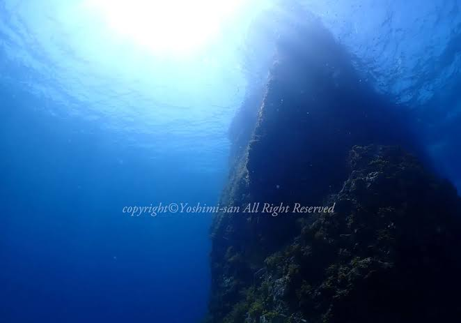

バディダイブ (3)
〜はじめての管理者を伴わないバディ・ダイブ〜
1989 年 06 月 04 日（日）に和歌山県由良町 白崎立巌にて、インストラクターなどの管理者を一切伴わない初めてのバディ・ダイビングを行いました。
よりにもよって人生初の完全バディ・ダイブなのに、ご一緒した方の名前をまったく覚えていません。ログブックにはサインを頂いているはずなのですが、ログブックは 1995 年の阪神・淡路大震災で被災した時に倒壊して瓦礫と化した自宅とともに滅失しました。そのためデータ以外の記録が一切残っていません。
学生の頃からダイビングをやっていて、当時は休眠状態だった方でした。メガネをかけたシュッとした方だったと記憶しています。
当時学生の時にダイビングをやっていたという場合、それは日本学生潜水連盟に加盟していた体育会系の潜水部だとか水中探検部などに所属していたことを意味します。一般的な社会人になってからダイビングを始めたビギナーダイバーからすると、すごい人だったりするわけです。
今から考えると、ぼくの面倒をガッツリ見て頂いてたんだろうなと冷や汗が流れます。当時のぼくは初のバディ・ダイビングだと思っていたわけですが、実際には大先輩にお世話されたダイビングだったのだろうと思います。
もちろんマニュアルに書かれていたり、海恋時代に児島さんと身につけてきたバディとしての基礎は行っていたと記憶しています。ですけれど、おそらくはこの方のバディとしてはぜんぜん役不足だったのではないかと、背中に冷や汗が流れます。
ぼくはバディとしてちゃんと行動していたと思うのですが、もしかするとぜんぜんダメなバディだったかも知れないと、今となってはわからないのですけれど、そんな危惧が脳裏から消えません。
そもそもどこで出会ったのかすら記憶していません。車を出していただいて運転までお任せしてしまっていたのに、本当に申し訳ありません。お前はなぜ運転しないのだ？と問われると、当時ぼくは普通自動車免許をまだ持っていなかったのでした。
そしてこの方とは 1989 年 08 月 06 日（日）の福井県越前町 軍艦岩でのダイビングがこの方との最後のダイビングとなります。
つまりこの方とはたった２本しか一緒に潜ったことがありません。なんでそうなっちゃったのかはぼくのデジタル化したダイビングログに記載していますが、そのときのデータを除く記録部分をそのまま転記します。
Date: 1989 年 08 月 06 日（日）
Location: 福井県越前町 軍艦岩
今回もショップのツアーではない、完全バディ・ダイビング。バディ・ダイビングとしては 4 本目。
今日のバディは前回の和歌山県由良町の白崎立巌でご一緒した方。再掲することになるが、どこで知り合ったのか実はまったく記憶にない。ダイビングを以前やっておられて、しばらくはやっていないとのことだった。お願いして一緒に潜りに行くことに。メガネをかけておられた。車の運転を全ておまかせして申し訳なかった。この頃ぼくはまだ普通自動車免許を持ってなかった。
車を出して頂いて、さらに運転を完全にお任せるというのが申し訳なくて、この人とはこのダイビング以降、疎遠に。この人には、ぼくから声をかけていたのだけど、あまりに申し訳なくて、声をかけられなくなってしまったのだった。

軍艦岩は大きな岩がゴロゴロするビーチからエントリーする。軍艦岩に向かって潜っていくと、大潮の満潮などでは最大水深 -30m に達する。そうでなくても今回の最大水深が -24m だということからわかるように、ディープダイビングになる。
とはいえ、あまり難しいポイントでもないので、減圧症にならずに事故にもならずに上がってくればいいやろ？と割とのんきに潜っていた。
サニーベイルさんの画像を見ればわかるように、沖側の深場から軍艦岩を見上げると、ど迫力で、すんげーとなる。
ぼくもこのとき Sea & Sea のカメラを持って入っていたのだけれど、やっぱり震災で全て失ったので残っていない。
最大水深が -30m 近くあり、ディープダイビングになるので、残圧と MDT の管理だけはしっかりとする必要がある。
当たり前だけど、当時はダイブテーブルをちゃんと引いて計画を立てて潜っていた。オープンウォーター Ⅰ しか持ってなくて (当時 NAUI の Open Water には Ⅰ と Ⅱ があった)、経験本数が 30 本に満たないダイバーでも、ぼくのような超絶意識が低いダイバーであっても、ダイバーであれば誰にとっても、そんなことは当たり前なんだよ？
今の人たち、わかってる？
それでぼくたちは最大水深までは降りなかったのだけど、それは海底の何かを観たいって言うよりは、軍艦岩そのものを観ていたかったから。なので下まで降りる必要がまったくなかった。
それに彼はダイバーとして先輩であったし、経験本数もぼくよりもあったけれど、ぼくらはやっぱりオープンウォーター Ⅰ だということもあって、あまり深いところには行かないほうがいいだろうってことで、水深計で水深をチェックしながら、軍艦岩を眺めてた。
ぼくはこの沖側の深めの水深から見る軍艦岩がとても好きで、これ以降バディ・ダイビングで越前を訪れるたびに、軍艦岩に入ることになる。なんだか北アルプスの立派な山容の山を見上げてる、そんな気になってしまうのだ。
長くなってきたので続きは次項に書きます。次回は【小野寺くんとの出会い - 魂としてのバディ】をお送りします。デュエルスタンバイ！！